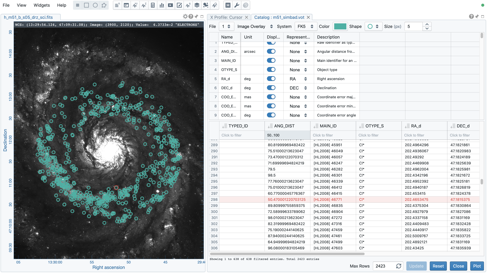
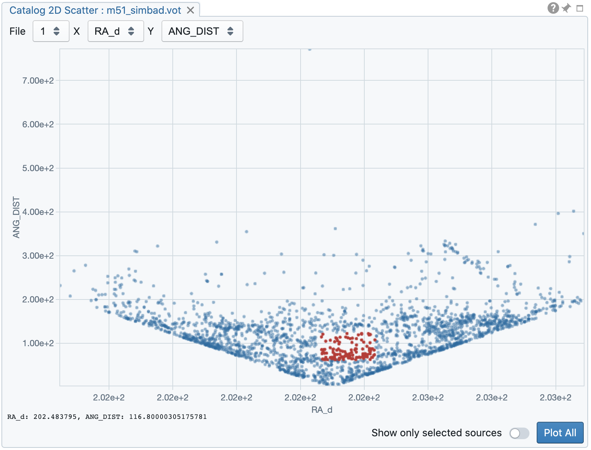
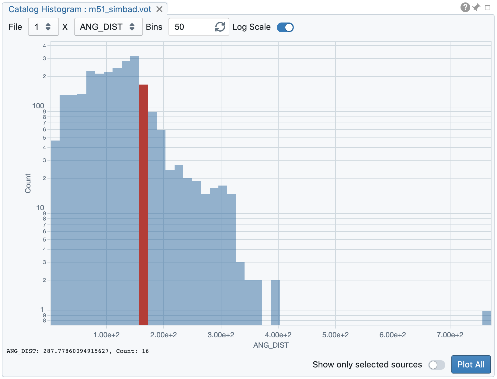
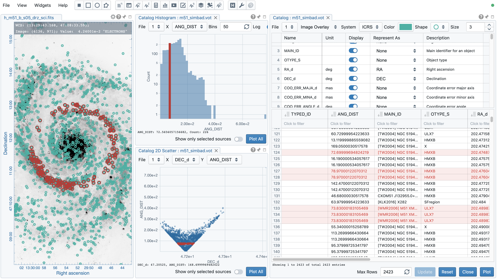

Catalogue visualization¶
Source catalogue files in the VOTable or FITS format can be loaded in CARTA (via File -> Import catalog) for visualization as an image overlay, or a 2D scatter plot, or a histogram. Once a source catalogue file is loaded, the information of each column will be shown in the upper table, while the actual catalogue entries are displayed in the lower table. By default, only the first 10 columns are enabled and displayed. Users may configure it to show or hide certain columns to be displayed in the lower table.
Catalogue filtering and rendering as image overlay¶
Depending on the rendering type defined (via a dropdown menu) in the top bar, the “Represent As” column allows users to set which columns are used for visualization. If the rendering type is “Image overlay”, the content of the dropdown menu of the “Represent As” column is determined by the “System” dropdown. Users need to tell CARTA which coordinate system the source catalogue file refers to. Source catalogue defined in image coordinate (0-based or 1-based) is also supported. Two numeric columns are required to render the source catalogue as an “Image overlay”. To render the source catalogue as a catalogue overlay in the image viewer, users need to identify which columns represent the source coordinates. If the rendering type is “Histogram”, one numeric column is required. If the rendering type is “2D scatter”, two numeric columns are needed.
The source catalogue table accepts sub-filters such as partial string match or value range. For numeric columns, supported operators are:
>: greater than>=: greater than or equal to<: less than<=: less than or equal to==: equal to!=: not equal to..: between (exclusive)...: between (inclusive)
For examples:
to filter everything less than 10, use
< 10to filter entries equal to 1.23, use
== 1.23to filter everything between 10 and 50 (exclusive), use
10..50to filter everything between 10 and 50 (inclusive), use
10...50
For string columns, partial match is adopted. For example, gal (no quotation) will return entries containing the “gal” string.
Once filters are set, by clicking the “Update” button, the filters will be applied and a filtered source catalogue will be displayed up to a number of entries defined in the “Max Rows” text input field. When the “Reset” button is clicked, all filters will be removed and the image overlay (if exists) will be removed too. For the histogram plot or the 2D scatter plot, the plot will be reset so that only the first (up to) 50 entries are rendered.
In the example below, a catalogue is loaded and displayed in the Catalogue widget. The rendering type is selected as “Image Overlay” and the 5th and the 6th columns are identified as source coordinates in the FK5 system. A filter is applied to the “ANG_DIST” column, resulting in 638 filtered sources. These sources are rendered on the image as green circles. With the catalogue selection button in the tool bar of the image viewer (bottom-right corner when hovering over), a source is selected and highlighted in red. The same source in the catalogue table is also highlighted in red.
Multiple catalogue files can be loaded and users may use the “File” dropdown at the top of the widget to switch in between. Multiple catalogue widgets may be launched to display different catalogue files. The “Close” button at the bottom of the widget will close the selected catalogue file in the “File” dropdown.
Note
For the version 1.4, a catalogue image overlay is not shared to spatially matched images. This limitation will be addressed in a future release.
More advanced filtering and rendering functions will be available in future releases.
Catalogue 2D scatter plot¶
The Catalogue 2D scatter plot widget shows a 2D scatter plot of two numeric columns of a catalog file. The available numeric columns are determined by the “Display” column of the upper table in the Catalog widget. The data used for plotting the 2D scatter is determined by the lower table in the Catalogue widget. The table may not show all entries due to the dynamic loading feature. Thus, the 2D scatter plot may not include all entries (after filtering). The “Plot All” button will request a full download of all entries and the histogram plot will then include all entries (after filtering).
By clicking on a point or using the selection tools from the top-right corner of the plot, selected sources will be highlighted in the source catalogue table, in the histogram plot (if exists), and in the image viewer (if the catalog overlay is enabled). Points on the plot will be highlighted if sources are selected in the source catalog table, in the histogram plot (if exists), and in the image viewer (if the catalog overlay is enabled). The “Show only selected sources” toggle will update the source catalog table to show only the selected sources.
Catalogue histogram plot¶
The Catalogue histogram plot widget shows a histogram of one numeric column of a catalogue file. The available numeric columns are determined by the “Display” column of the upper table in the Catalog widget. The data used for plotting the histogram is determined by the lower table in the Catalogue widget. The table may not show all entries due to the dynamic loading feature. Thus, the histogram plot may not include all entries (after filtering). The “Plot All” button will request a full download of all entries and the histogram plot will then include all entries (after filtering). The number of bins and the scale of the y-axis can be customized.
By clicking on a certain histogram bin, source entries of that bin will be highlighted in the source catalog table, in the 2D scatter plot (if exists), and in the image viewer (if the catalog overlay is enabled). A certain histogram bin will be highlighted if source entries of that bin are selected in the source catalog table, in the 2D scatter plot (if exists), and in the image viewer (if the catalog overlay is enabled). The “Show only selected sources” toggle will update the source catalog table to show only the selected sources.
Linked catalogue visualization¶
The source catalogue table, the image overlay, the 2D scatter plot, and the histogram plot are inter-linked or cross-referenced. This means, for example, selecting a source or a set of source in the catalogue table will trigger source highlight in other places. Or, selecting a source or a set of sources in the 2D scatter plot will trigger source highlight in other plots and in the catalogue table.
